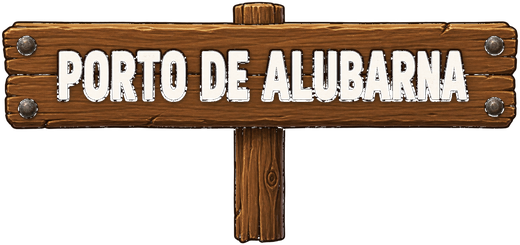

⚓
Mestre do Porto
Bem-vindo, capitão. Caminhe até um NPC e aperte E para conversar.
Porto Seguro
Cais da Aurora
Explore e fale com os NPCs Preparar a expedição Fale com Nami no cais ou abra o mapa para navegar até uma ilha. 18 100 100 100 0 / 160 1.250Tripulação
Poder 0Escolha até 5 tripulantes · 0 / 5